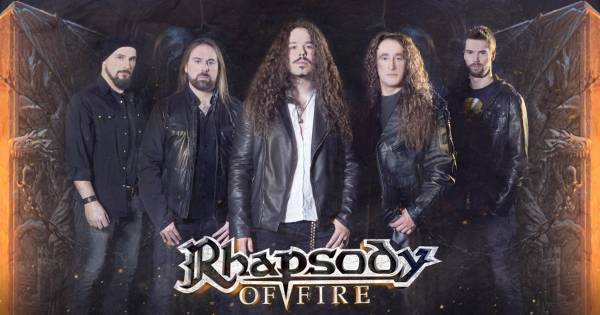

Biografia
Rhapsody Of Fire es una banda de Metal sinfonico epico procedente de la ciudad de Trieste, Italia en 1993 creada por Luca Turilli (guitarrista) y Alex Staropoli (teclista), quienes son los principales compositores de la banda. Su primer nombre fue Thundercross, con el que sacaron un EP. Posteriormente cambiarían su nombre a «Rhapsody» con el cual serían mundialmente conocidos, para finalmente el 2006, debido a problemas legales, cambiaron su nombre a «Rhapsody Of Fire».
Rhapsody se ha caracterizado por ser una banda pionera e innovadora y creadora de su propio estilo musical, en donde se marcan en cada una de sus canciones grandes arreglos orquestales, guitarras virtuosas que se pueden diferenciar facilmente de cualquier otra banda, siempre bien acompañados de un exelente teclado y bajo que los caracteriza, sin olvidar la potente y unica voz de Fabio Lione, que demuestra una gran destreza vocal efectuando estilos vocales desde un tenor de ópera hasta incluso voz gutural.
La banda italiana de metal Rhapsody es, sin duda uno de los grupos más influyentes de los años 90. Con su mezcla de metal melódico y elementos de la música clásica influenciado por las bandas sonoras de cine, los italianos crearon un género completamente nuevo: el metal sinfónico.